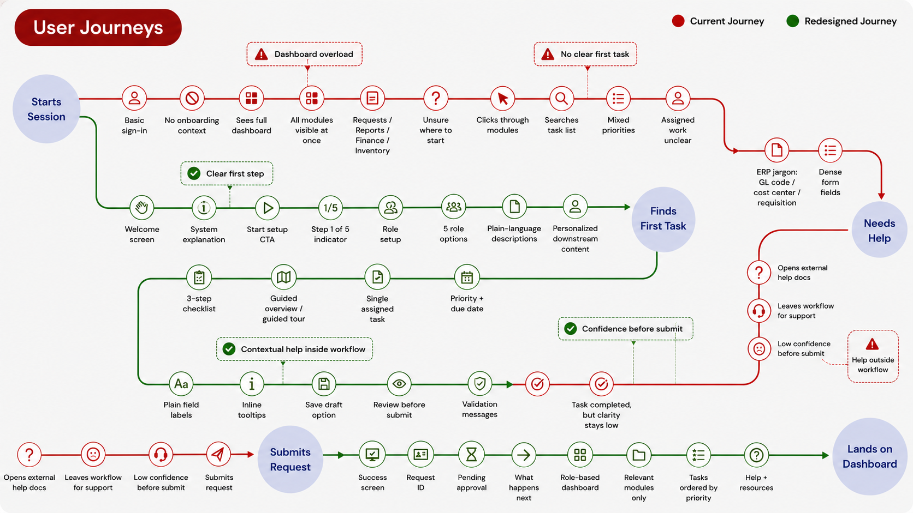
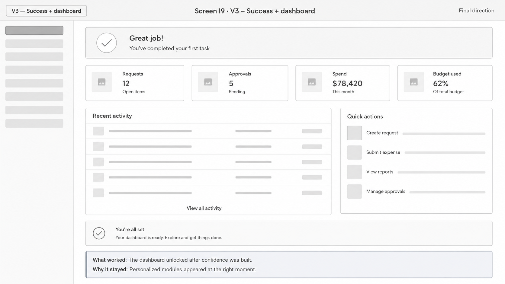
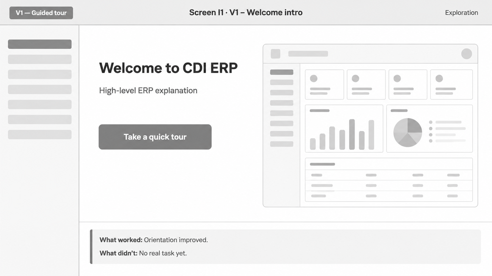
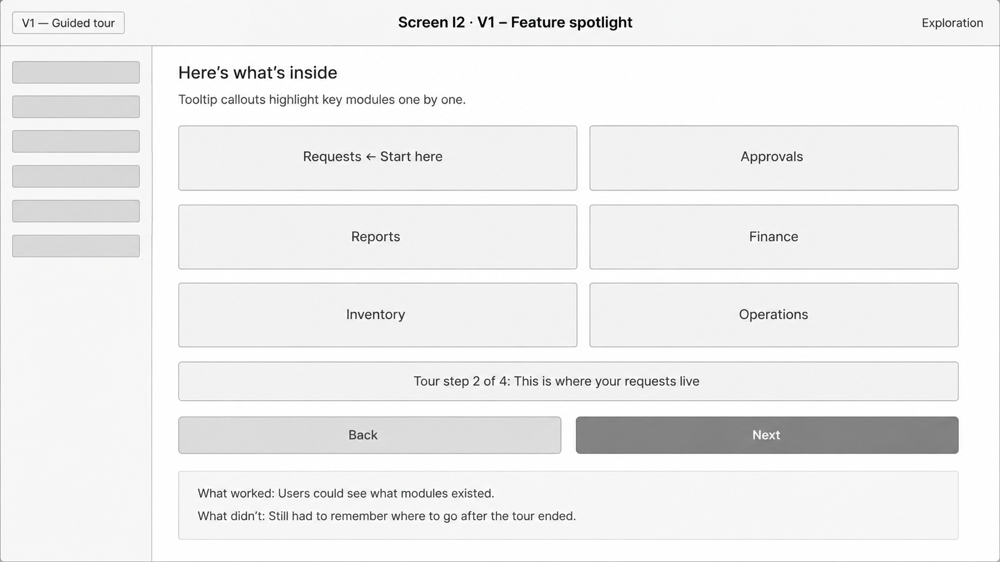

Back to Portfolio
UX Case Study
Enterprise Redesign
Simplifying ERP Onboarding for Faster User Adoption
How transitioning a legacy enterprise tool from a "dashboard-first" view to a "guided, role-based flow" lowered onboarding friction and reduced database errors.

Key Results & Outcomes
A research-led redesign that proved enterprise complexity can be successfully sequenced.
The Challenge
When dashboard overload paralyzes the first-time user.
ERP (Enterprise Resource Planning) systems are inherently powerful because they consolidate key business operations: finance, procurement, warehouse logistics, and HR. However, this power results in extreme interface density.
The legacy Connexions ERP onboarding dropped newly hired associates straight into the complete, unconfigured dashboard immediately after login. Users were presented with dozens of modules, sidebar links, and empty analytical widgets. Under usability testing, 60% of users failed to locate their first assigned task without opening a support ticket or asking their manager for direct, step-by-step guidance.
The Goal: Redesign the first-time entry experience to guide users safely through their initial business-critical setup task, building confidence and reducing support tickets before revealing the full workspace.
The 12-Week UX Timeline
A systematic design methodology to tackle enterprise friction.
To design a safe onboarding path, the project followed a structured process covering discovery, heuristic evaluation, exploratory interviews, wireframing, and before-vs-after prototype usability testing.
Discovery & Research
Heuristic audit of the legacy flow, secondary research scans on progressive disclosure, and gathering sysadmin forum signals.
User & Stakeholder Interviews
Conducted 8 primary interviews with operations associates and 3 deep-dives with ERP training admins and department leads.
Journey Mapping & Ideation
Synthesized findings into a user persona, current journey map, and compared three design concepts (tour, checklist, role-flow).
Prototyping & Testing
Created mid/high fidelity interactive flows, ran usability tests with 11 participants (before vs. after), and delivered WCAG guides.
Heuristic Evaluation
Identifying the friction points of the legacy flow.
An audit of the legacy dashboard-first onboarding against Nielsen's Usability Heuristics revealed critical barriers that directly triggered drop-offs.
Critical Violation
Visibility of System Status
Users logged in and had no visible cues, checklist, or indicators showing whether their setup was complete, in progress, or pending admin approval.
Redesign: Added persistent progress tracker and success alerts.
High Violation
Match between System and Real World
Terminology was heavy with financial jargon (Requisition, GL Code, BU, Cost Center) without context, forcing new hires to search external documentation.
Redesign: Integrated plain-language definitions and helper tooltips.
High Violation
Error Prevention
Validation rules only fired *after* form submission. Form submissions with incorrect business codes triggered severe database rejections, causing anxiety.
Redesign: Implemented inline validation and a "Review" step.
Target User Profile
Designing for operations associates entering a complex environment.
AM
Alex Morgan
Operations AssociateResponsible for initiating purchases, tracking department budgets, and submitting supply requests.
- ERP Familiarity
- Beginner
- Tech Comfort
- Medium
- Role Tenure
- New Hire (Week 1)
Primary Onboarding Goals
- Locate and complete the first assigned purchase task quickly.
- Submit financial transactions accurately without invoking errors.
- Understand what the business-critical fields mean in plain English.
Key Onboarding Frustrations
- Afraid of clicking the wrong module and submitting an incorrect request.
- Struggles to interpret accounting acronyms and GL categories.
- Felt forced to rely on teammates or managers to complete standard steps.
"I recognized some of the words on the dashboard, but I had no idea which module applied to me. I was terrified of submitting the wrong request and creating a mess in the system."
— Operations Associate Interview ParticipantThe Experience Pivot
Before vs. After: Re-sequencing the onboarding journey.
1. The Friction-Heavy Journey

Friction: Post-login, users land on the main workspace. They must navigate a dense left sidebar, guess which module contains their task, fill out jargon-heavy forms, and face late-stage validation errors. This linear friction caused high drop-off and support dependency.
2. The Task-First Journey

Improvement: Users enter through a dedicated welcome screen, select/confirm their role, and are guided directly to their first assigned task. Form inputs feature inline assistance, followed by a review checkpoint before database submission. The dashboard is disclosed only after success.
Interactive Prototype Flow
Click through the redesigned onboarding steps.
Experience the step-by-step onboarding journey that guides new Operations Associates from first login to successful task completion.
Onboarding Step 1
Reducing Initial Friction

Usability Results
Before vs. After Testing Metrics
We conducted comparative usability testing with 11 operations users (5 testing the legacy dashboard-first experience, and 6 testing our interactive redesign prototype).
| Usability Metric | Legacy Flow (Before) | Redesigned Flow (After) | Interpretation |
|---|---|---|---|
| Onboarding Task Completion | 60% | 92% | Significantly more users completed their setup task. |
| Average Time-on-Task | 2m 40s | 1m 35s | 40% faster completion due to direct task surfacing. |
| Wrong Module Clicks (Avg) | 3.2 clicks | 0.8 clicks | Reduced navigation confusion and sidebar hunting. |
| Confidence Rating (1-5) | 2.4 / 5 | 4.2 / 5 | Users felt far more secure before submitting. |
| Required Help to Begin | 80% (4/5 users) | 17% (1/6 users) | Drastically reduced the support/manager dependency. |
| Abandonment Risk Score | 100 (Baseline) | 70 (-30%) | Calculated prototype drop-off indicators dropped by 30%. |
Enterprise Terminology Strategy
Translating corporate jargon into plain English.
We realized we could not remove standard ERP fields because other teams (accounting, procurement) depended on them. The solution was keeping the terms, but embedding plain-language helper copy directly next to the fields.
| ERP Acronym / Term | Plain-Language Explanation | UI Implementation |
|---|---|---|
| Requisition | A request to buy or approve supplies/services. | Displayed as: "Requisition (purchase request)" |
| GL Code | Accounting category used for tracking expenses. | Added helper text: "Used by Finance to categorize this request." |
| Business Unit (BU) | Your regional or functional corporate entity. | Spelled out on first use. Spans select menu options. |
| Cost Center | The specific team or department budget center. | Added tooltip explaining how it prevents department charges. |
Accessibility / WCAG AA Compliance
Enterprise design must work for everyone.
We treated accessibility as a core design constraint rather than a final check. Key decisions were mapped to the Web Content Accessibility Guidelines (WCAG 2.2).
WCAG 3.3.2
Labels and Instructions
Every selector, input field, and action has a persistent visible label, accompanied by inline instructions. We avoided floating labels that disappear on focus.
WCAG 2.1.1 & 2.4.7
Keyboard & Visible Focus
All onboarding steps, dialogs, and fields are reachable via standard Tab navigation, featuring a clear, high-contrast sky-blue focus outline indicator.
WCAG 3.3.4
Error Prevention
By splitting inputs into steps and summarizing data in a final "Review before submit" dialog, we prevent users from sending erroneous transactions.
Reflection
Key Takeaways & Tradeoffs
The core learning from this redesign is that enterprise UX is not about removing complexity. Enterprise business logic is complex because corporate operations are complex. The designer's job is not to hide the logic, but to sequence the decisions.
Tradeoffs Considered: We balanced onboarding guidance against speed. For returning or experienced users, we added a "Skip Onboarding" button, allowing immediate dashboard entry. Personalizing by role initially created database mapping challenges for engineering, which we solved by introducing a "Role Confirmation" state during step 2.